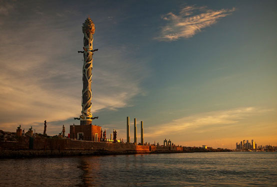

Pontos Turísticos
Não deixe de visitar
O Parque das Esculturas de Francisco Brennand é um dos cartões postais de Recife. Num cenário maravilhoso, o complexo foi construído sobre o molhe do porto no ano 2000 em comemoração aos 500 anos de descobrimento do Brasil.
Para chegar até ele, os visitantes podem escolher entre fazer a travessia de barco partindo do Marco Zero ou ir pela Avenida Brasília Teimosa. Os dois caminhos levam até uma espécie de museu a céu aberto com esculturas de pássaros, tartarugas e outros animais, entre eles a que mais chama atenção é a flor de 32m de altura, chamada de “Torre de Cristal”.
Algumas esculturas aparecem escondidas sob as águas e dão o ar da graça aos visitantes durante a maré baixa, tornando o passeio diferente a cada visita. A vista que se tem do Recife é maravilhosa e o por do sol imperdível.